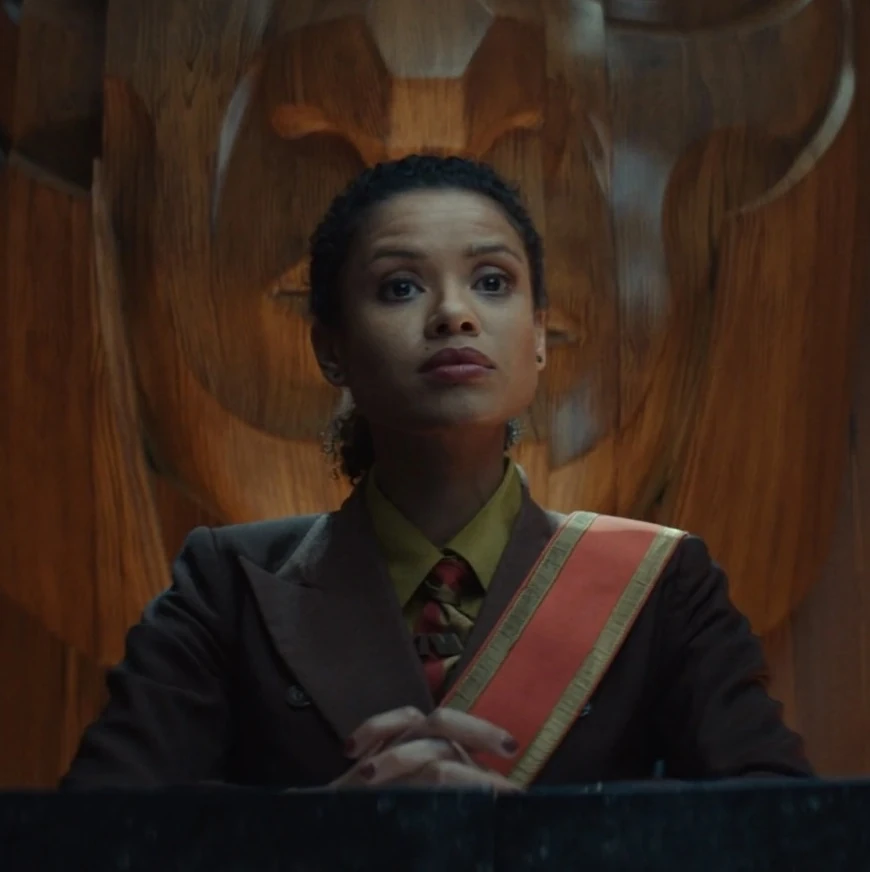
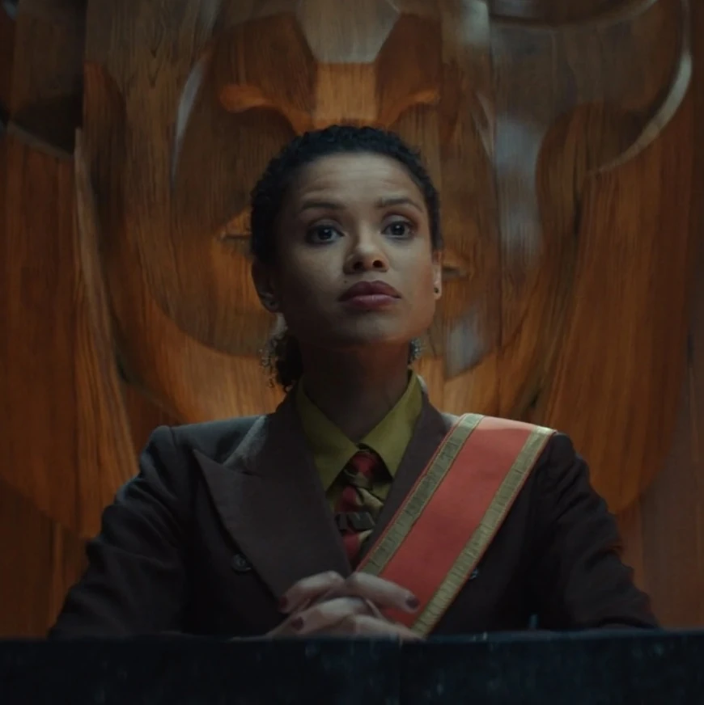

"Loki" é uma série da Marvel que segue o Deus da Trapaça, Loki, após os eventos de "Vingadores: Ultimato". Quando ele rouba o Tesserato e cria uma linha do tempo alternativa, ele é capturado pela TVA (Time Variance Authority), uma organização que gerencia e mantém a linha do tempo do multiverso. A série explora a identidade e os dilemas de Loki enquanto ele se envolve em uma trama complexa que desafia o conceito de destino e liberdade, lidando com variantes de si mesmo e tentando entender seu verdadeiro propósito no vasto multiverso.
 
